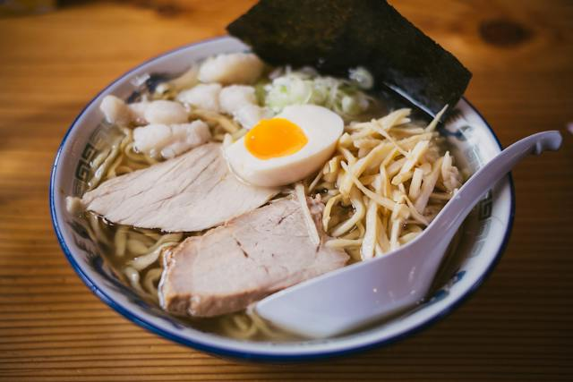

Ramen Noodles

Description
Tacos are a dish made out of a flour or corn tortillia folded in half
and filled with meats, sauces, vegetables, cheese, and spices
Ingredients
- Ramen Style Rice Noodles
- Water
- Egg
- Chicken Bouillon Cube
- Fish Cakes
- Seaweed
Steps
- Boil the water.
- Add in the noodles and the chicken bouillon cube.
- When noodles are soft, turn down the heat to a simmer.
- Drop in an egg and poach in the water.
- Add in the additional ingredients, Fish Cakes and Seaweed Pieces.
- Eat.
Home